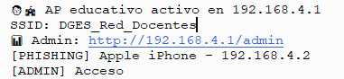
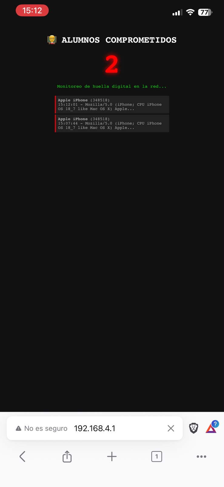

Experiencia controlada
Cómo funciona la simulación
Una placa ESP32-C3 crea una red Wi-Fi educativa. Quien se conecta es redirigido a un portal que imita un sistema administrativo escolar. Al “iniciar sesión” vive la secuencia phishing → ransomware → lección.
Flujo paso a paso
El estudiante busca el SSID (por defecto DGES_Red_Docentes) y se conecta. La red es abierta (sin contraseña).
El ESP32 responde al DNS y redirige cualquier intento de navegación a la página del “Portal Administrativo Docente”.
Se muestran secciones (Notas, Comunicados, Calendario, Asistencia). Al elegir una se pide cédula y contraseña. Hay una clave de ejemplo visible para no generar frustración innecesaria.
Al enviar el formulario aparece la pantalla de phishing. Se aclara de inmediato que es una simulación educativa y que los datos no se guardaron.
Una animación visual muestra “cifrado” de archivos ficticios y una nota de rescate. Todo ocurre solo en el navegador.
Se presenta un resumen de phishing, ransomware y buenas prácticas de protección.
En http://192.168.4.1/admin el docente ve el contador de dispositivos que “cayeron” y una huella aproximada (modelo + User-Agent).
Capturas reales

